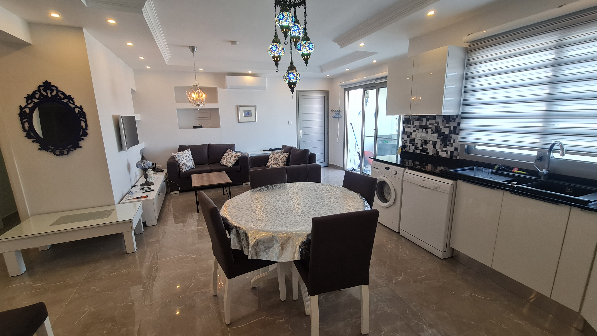

Nord Kypros har en fantastisk natur, rik historie og varme året rundt. Det er varmt med over 20 grader fra mars til desember, og vinteren er mild. Her er det godt å bade, sole seg, spise god og rimelig mat, eller utforske øya.
Leiligheten har 3 soverom med 7 sengeplasser, velutstyrt kjøkken og takterrasse med fantastisk utsikt med grillmuligheter, utekjøkken og utedusj. Det er 2 bad med dusj, og aircondition i alle rom. Utsikten fra takterrasen må oppleves! Her er det fint å nyte solnedgangen som går ned i havet, eller å se på Kyrenia fjellrekken.
Leiligheten er plassert i Magic Blue Village, ett område med 4 bassenger og 2 restauranter. Det er også treningsrom, Hamam, Badstu og rimelig og god massasje under Ocean Blue restauranten som ligger ved det ene bassenget. Ocean Blue har veldig god indisk mat og forskjellige europeiske retter. Den andre restauranten er drevet av 2 hyggelige svensker og de tilbyr sør-asiatisk mat. I Blue Magic Village er det mange skandinavere, og det vil derfor være lett for barn å finne seg lekekamerater i skoleferiene.
Stranda som ligger ca 100m fra leiligheten er en idylisk naturstrand. Der kan det være fint å snorkle eller ta seg ett bad. Dersom en velger i leie seg bil under oppholdet er det større sandstrender innen noen få minutters kjøretid.
Kyenia er den største byen i nærheten, som ligger ca en halvtimes kjøretid fra området. Kyrenia har en Venetiansk havn med koselige restuaranterg, Kyrenia festning, shoppingmuligheter og uteliv.
Leiligheten leies ut for minimum 1 uke. Den leies ut for kr 1300,- pr natt i høysesong og kr 900,- i lavsesong. Dersom du ønsker langtidsleie utenfor høysesong så kan vi snakke om en egen pris.
Norwegian flyr Oslo til Larna og Larnaca til Oslo tirsdag og lørdag hele året. Larnaca er flyplassen på Kypros (sør). I tillegg er det mulig å få tur med charterly, eller fly til Ercan på Nord Kypros via Istanbul. Det er enkelt å lande i Larnaca og vi kan ordne transport fra flyplassen til Blue Magic. Det tar ca 1 time og koster 60 pund i behagelig 7 seters bil.
Klimaet kan sammenlignes med Kanariøyene som mange kanskje er kjent med. Det er lite nedbør og mildt hele året. På sommeren kan det være 30-35 grader, og 27 grader i vannet. Den fineste tiden er kanskje april til juni og september til desember. Da er det meget behagelig rundt 20-30 grader.
Tyrkiske Lira er valutaen, og prisnivået er meget behagelig sett med norske øyne. En middag inkludert drikke kommer på rundt 100 lappen. Øl på resturant koster 20-30 kroner. Massasje på Blue Magic Village kommer på 400 kr for 1 time. Leiebil koster rundt 200 kr dagen.
Nord Kypros bruker Engelsk strømkontakt. I leiligheten er det allerede mange adaptere til norsk strømsokkel.
I høysesongen kan det være lurt å bestille leiebil på forhånd. Det koster ca 200 kr dagen for en automatbil. Kjøring er på venstre siden og noe uvant for oss, men det venner enn seg for til. Det er ikke de store avstandene på øya. Dersom en ønsker å besøke Sør Kypros må en huske på en betale litt ekstra for bilforsikring.